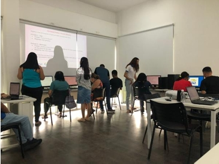

O Projeto que brilhou
O projeto “Aplicabilidade de Ferramentas Digitais” teve como objetivo promover a inclusão digital e o desenvolvimento de habilidades tecnológicas entre jovens e adultos da comunidade atendida pela Biblioteca Júlio Santiago, no COMPAZ Miguel Arraes.
O propósito do Projeto
O projeto “Aplicabilidade de Ferramentas Digitais”, desenvolvido por estudantes em EAD, dos cursos de Administração, Design Gráfico, Logística, Tradução e Interpretação de LIBRAS e Desenvolvimento de Sistemas da Escola Técnica Professor Antônio Carlos Gomes da Costa – ETEPAC, foi aplicado como extensão para os usuários da biblioteca Júlio Santiago, que funciona no COMPAZ Miguel Arraes, um parceiro de suma importância deste projeto. Teve como objetivo principal promover a inclusão digital e o desenvolvimento de habilidades tecnológicas entre jovens e adultos da comunidade do bairro onde está localizada essa Instituição, que foi criada pela Prefeitura do Recife e é uma iniciativa de primordial importância para a comunidade.
Parceria ETEPAC + COMPAZ
A iniciativa foi possível graças à colaboração entre duas instituições comprometidas com a educação e o desenvolvimento social: a ETEPAC, referência em ensino técnico à distância, e o COMPAZ, símbolo de cidadania e convivência comunitária.
Essa união demonstrou o poder da educação aplicada e da responsabilidade social em promover transformação e oportunidade.

Quem Fez Parte?
O projeto contou com nove bolsistas dos cursos de:
- Administração
- Design Gráfico
- Logística
- Tradução e Interpretação de Libras
- Desenvolvimento de Sistemas
Essa diversidade fortaleceu a interdisciplinaridade — um dos grandes diferenciais do projeto — permitindo que diferentes perspectivas se unissem em torno de um único propósito: ensinar para transformar.

Resultados e Aprendizados
A troca de experiências entre bolsistas e alunos foi enriquecedora. Durante o curso, observou-se um crescimento mútuo — tanto dos estudantes instrutores quanto dos participantes do COMPAZ.
Dos 21 alunos que concluíram o curso:
- 57,1% eram mulheres (12 alunas);
- 42,9% eram homens (9 alunos).
A classificação etária também demonstrou a diversidade de faixas etárias e perfis interessados em aprimorar habilidades digitais.

Um Novo Horizonte
O projeto proporcionou uma trilha de aprendizado contínuo, abordando desde conceitos básicos até temas modernos como Inteligência Artificial e Internet das Coisas (IoT).
Essa abordagem formou cidadãos mais preparados para o futuro digital, capazes de aplicar o conhecimento adquirido tanto em suas vidas profissionais quanto em atividades cotidianas.